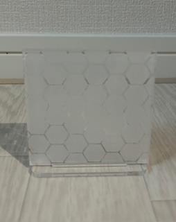
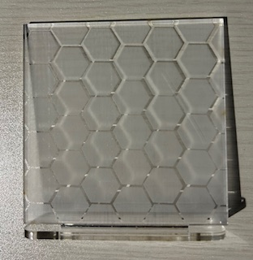

写真1：立たせた正面像

写真2：ディテール写真
作品説明
ハニカムスタンドは、六角形を規則的に並べたハニカム模様を表面に施したアクリル板を用い、シンプルな台座に差し込むことで自立させる構造です。視覚的な反復と均衡がもたらす安堵感をデザインコンセプトにしています。卓上オブジェクトとしてだけでなく、小物トレイやフォトスタンドの背景としても使えます。
制作で工夫した所
- ハニカムパターンのライン幅を細くしすぎないことで、カットの成功率を上げつつ透け感を確保しました。
- 六角形の配置は規則性を保ちつつ、端部での不完全セルをあえて残すことで手作り感を加えました。
- スタンドの嵌合部は摩耗を見越して0.1〜0.2mmのクリアランスを設け、接合のきつさを調整しました。
- アクリルの一面にサンドブラスト処理を行い、光の拡散をやわらげて視覚的な柔らかさを出しました。
反省点
- 端部のバリ取り（切削後の焦げやススの除去）をもっと丁寧に行う必要がありました。写真の角にわずかなススが残っています。
- 嵌合部のクリアランスは普段使いではちょうど良いものの、複数回の着脱で緩くなる懸念があります。次回は差し込み方の形状を工夫してロック性を高めます。
- レーザー出力やスピードの記録を毎回細かく残しておらず、同じ仕上がりを再現しづらかったです。今後は材料ごとに設定ログを残します。
素材・加工メモ
※以下は使用した条件の一例です。レーザー機種やアクリルの厚みで適切な設定は異なります。
- 素材：キャストアクリル 透明 3mm
- レーザー設定：出力 80%、速度 20mm/s
- 仕上げ：サンドブラストで片面をマット化、エッジはバリ取りと軽い研磨
使い方アイデア
- デスクのアクセントとして単体でディスプレイ
- 背後にLEDを置いて光を透過させ、模様を演出
- 写真やカードの背景に立ててフォトスタンドとして使用